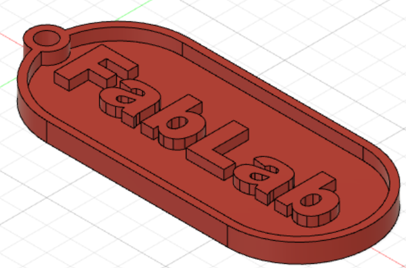
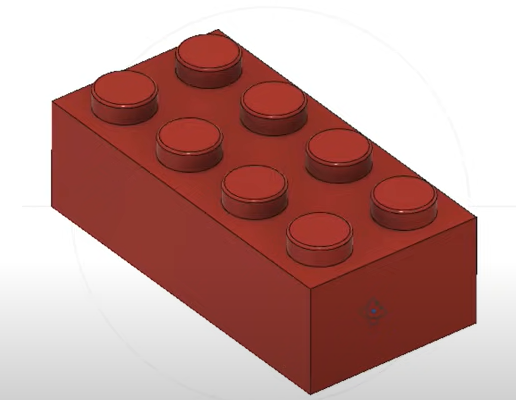
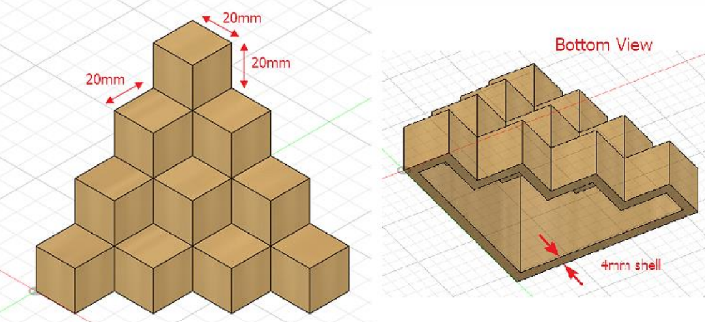
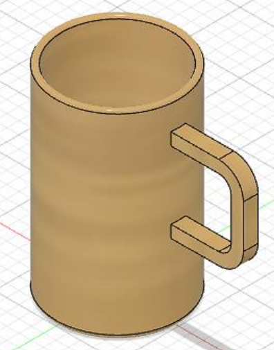
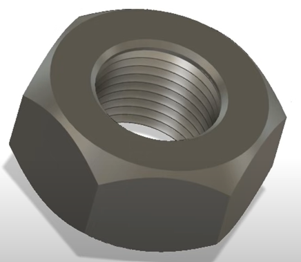
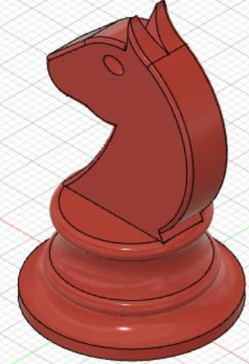

Fusion 360
This week is all about Fusion 360, and our lecturer assigned us six tasks that, in theory, should cover all the fundamental abilities.
Exercise 1
Create a NameTag with your name on it as the first exercise. Rectangle, circle, and text were the tools we utilized for this assignment. After modifying, I used the extrude tool to convert the design from 2D to 3D.
Exercise 2
Making a Lego brick as part of the second exercise. Rectangle and circle editing tools were employed during this project, and extrude was the tool I used to convert the design from 2D to 3D. To make sure that the circle piece is rounded off, I utilize the fillet function. I replicate the circle component that is at the top and bottom of the brick using the rectangle pattern tool. A Lego brick will be created by combining the circle piece and the brick.
Exercise 3
Making a Cube Stairs (Planes and Extrudes) as part of the third exercise. The tool I used to convert the design from 2D to 3D after editing was extrude. The tool we used during this activity was rectangle under the edit function to produce the square shape. I copy the cube to the desired number of times till it forms a stair using the rectangle pattern tool. Finally, I utilized the shell function to make sure that the Cube Stairs' bottom portion is hollow all the way up to the top.
Exercise 4
Making a Mug with a Handle as part of the fourth exercise. In this exercise, we used the circle tool to create the mug and the line and arc tools in the edit function to create the handle. Extrude is the tool I used after modifying to convert the design from 2D to 3D. To make sure the bottom of the mug is rounded off, I utilize the fillet feature.
Exercise 5
Making a Hex Nut as part of the fifth exercise. In this activity, the rectangle tool from the edit function was utilized to create the hexagonal shape. To make the hexagonal form more like a nut, I use line to draw a triangular shape and bevel the edge. I use a mirror to make sure that the bevel around the bottom and top parts is the same. The thread that runs through the center of the hex nut is similarly made using the thread function.
Assignment
Our final project required us to design a any chess piece and 3D print it during the subsequent lesson. I utilized line as my tool for this project. I traced a photograph that I had inserted via a canvas. Once the tracing is complete, I revolved it to make it into a chess piece. In order to be sure that the entire object is hollow throughout, I utilized the shell function.
